01
Muayene ve konuşma
Dişlerin durumu değerlendirilir; beklentiniz ve sorularınız konuşulur. Kronun uygun olup olmadığına burada karar verilir.
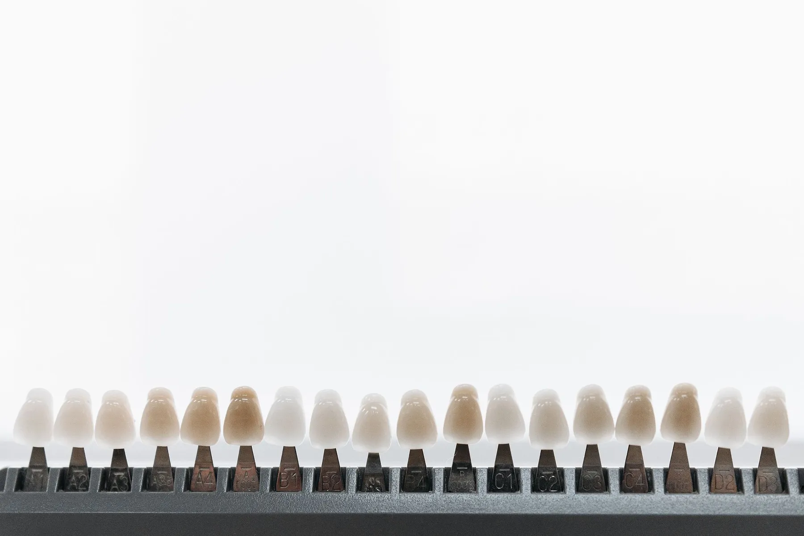
Merkezefendi, 29 Ekim Bulvarı'nda muayenehane. Renk skalası, aşamalar, sorularınız: hepsi baştan konuşulur.
Estetik bir kron, bir renk skalasıyla başlar; ama ondan önce sorularınızla. Ne yapılacağını, kaç adımda ve neden yapılacağını bilerek başlamak, sakin bir başlangıçtır.
Genel bir anlatım: aşamalar ve sayıları dişin durumuna göre değişir, muayenede size özel anlatılır. Örnek anlatım · fotoğraflar temsilîdir
Dişlerin durumu değerlendirilir; beklentiniz ve sorularınız konuşulur. Kronun uygun olup olmadığına burada karar verilir.
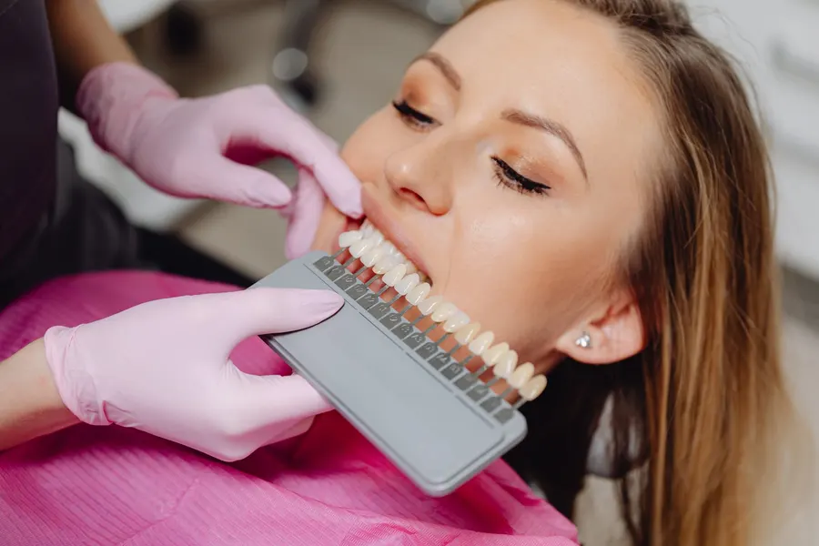
Diş renk skalası komşu dişlerin yanında tutulur; mümkünse gün ışığında, sizinle birlikte bakılır.
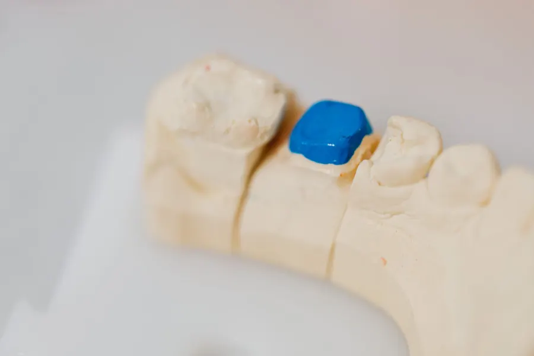
Diş hazırlanır, ölçü alınır. Bu sürede geçici bir kaplama kullanılıp kullanılmayacağı anlatılır.
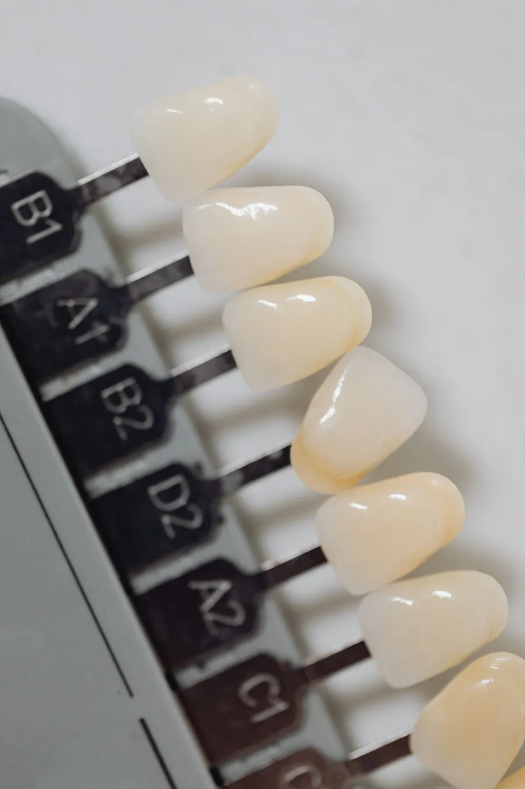
Kron yerine oturtulmadan önce denenir; uyum, renk ve biçim birlikte kontrol edilir.
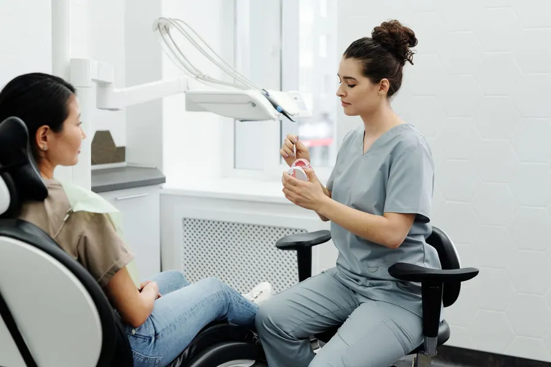
Kron yerleştirilir; günlük bakım ve kontrol aralığı size anlatılır.
Instagram'daki "Soru cevap" öne çıkanının sitedeki hâli. Bir soruya dokunun; cevap sohbete düşsün. Muayenede konuşmak istediklerinizi randevu masasına ekleyin.
Cevaplar örnek ve genel bilgidir; yayında Dt. Meryem Özkan'ın kendi cevaplarıyla değişir.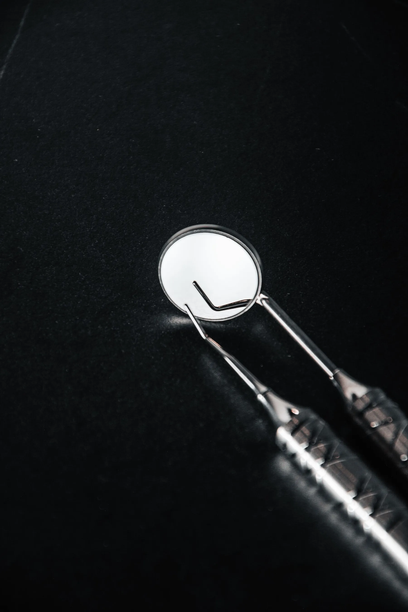
Kimin için, ne için, hangi gün: seçin. Sorularınız ve yanınıza alacaklarınızın listesi bilete eklenir; bilet WhatsApp mesajına dönüşür.
Öne çıkanlardaki başlıklar sitede de yerini bulur: estetik kronlar, soru cevap, klinik anıları ve iletişim. Dokunun, Instagram'da açılsın.
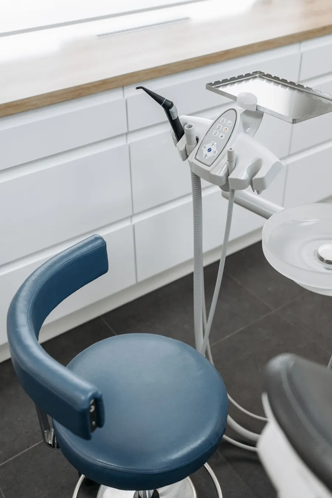
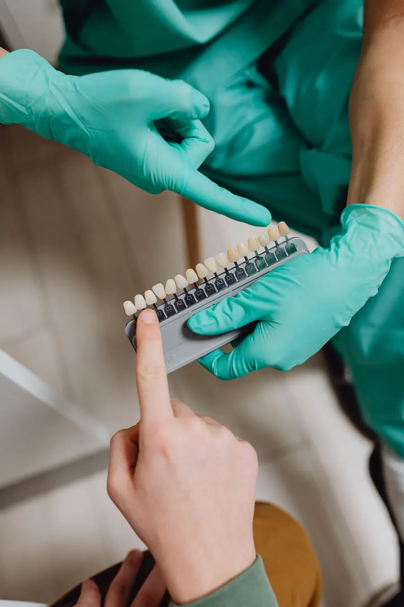
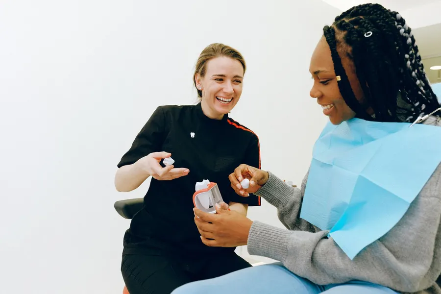
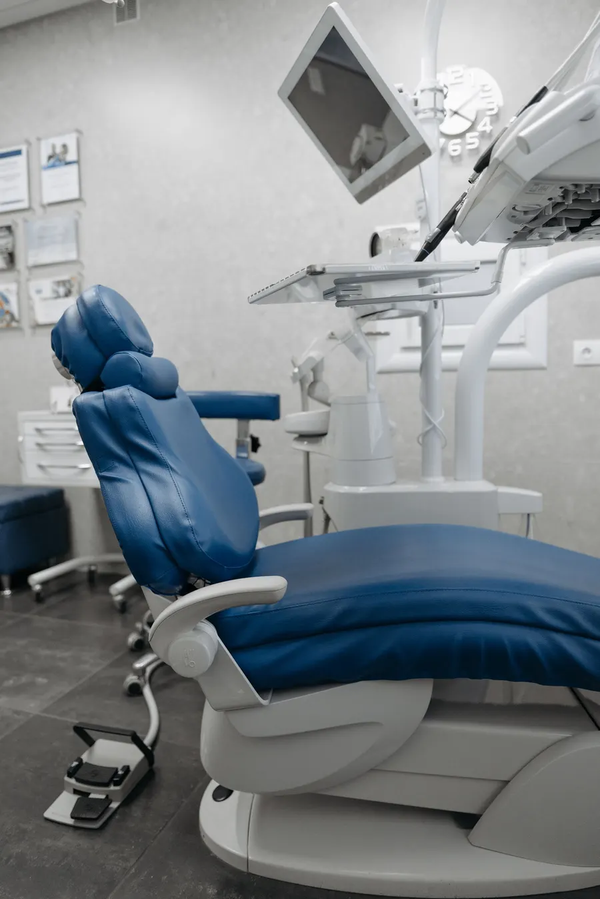
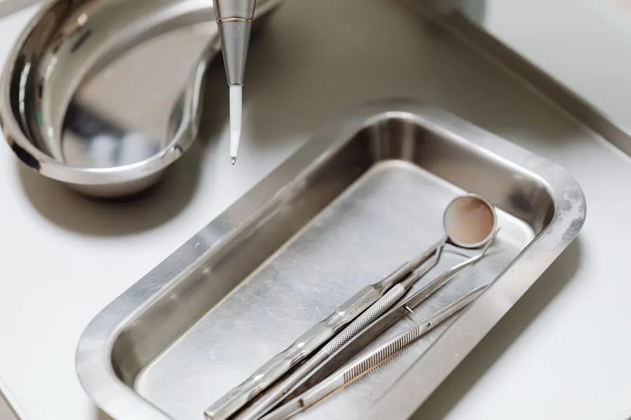
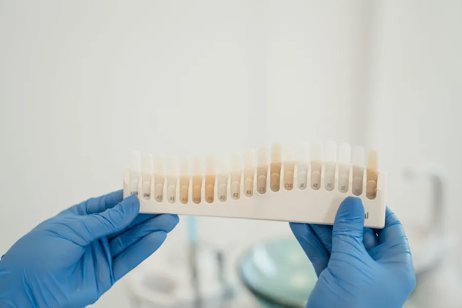